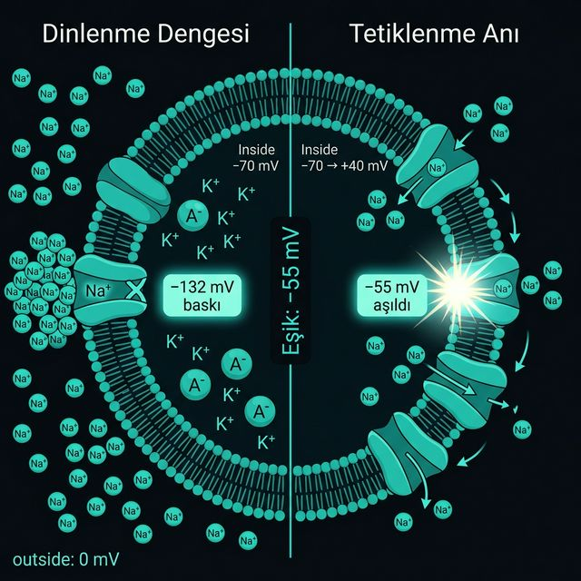

Dinlenme halinde içerisi \( -70 \) mV. \(\text{Na}^+\) içeri girmek için \( -132 \) mV'luk devasa bir baskıyla bekliyor — ama voltaj kapılı \(\text{Na}^+\) kanalları kapalı.
\(\text{Na}^+\) kanalının içinde voltaja duyarlı bir protein parçası var. Bu parça tam \( -55 \) mV'da yeterli elektriksel kuvveti hissediyor ve fiziksel olarak şekil değiştirip kanalı açıyor. Her nöron bu şekilde kalibre edilmiş bir eşiğe sahiptir.
Komşu bir nörondan gelen sinyal membranı \( -70 \)'ten yukarı iter. \( -55 \) mV'a ulaşılınca kanal açılır ve artık dışarıdan yardıma gerek kalmaz; \(\text{Na}^+\)'un kendi baskısı devralır.
İlk kanal açılınca komşu kanallar da hızla açılır. Bu döngü \( +40 \) mV'a kadar durdurulamaz. Sonuç her zaman aynıdır; güçlü uyarı daha büyük tepe değil, daha sık ateşleme (frekans) üretir.
\( -132 \) mV'luk baskı her zaman orada bekliyor. \( -55 \) mV o enerjinin serbest kaldığı tetik noktasıdır.
